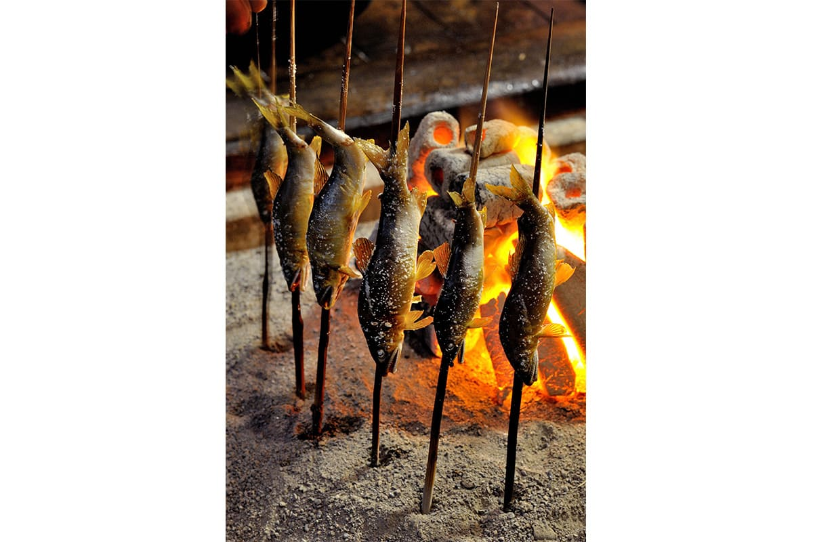
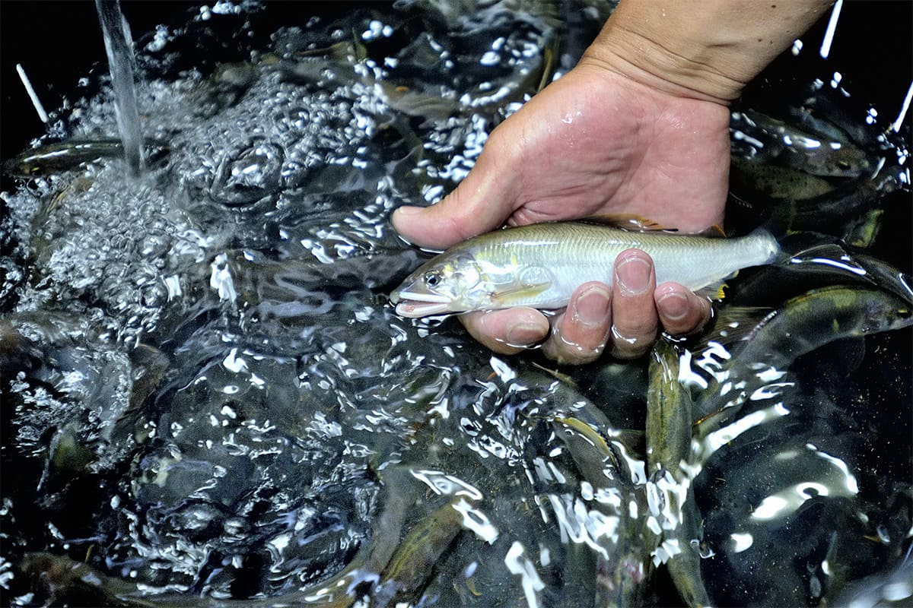
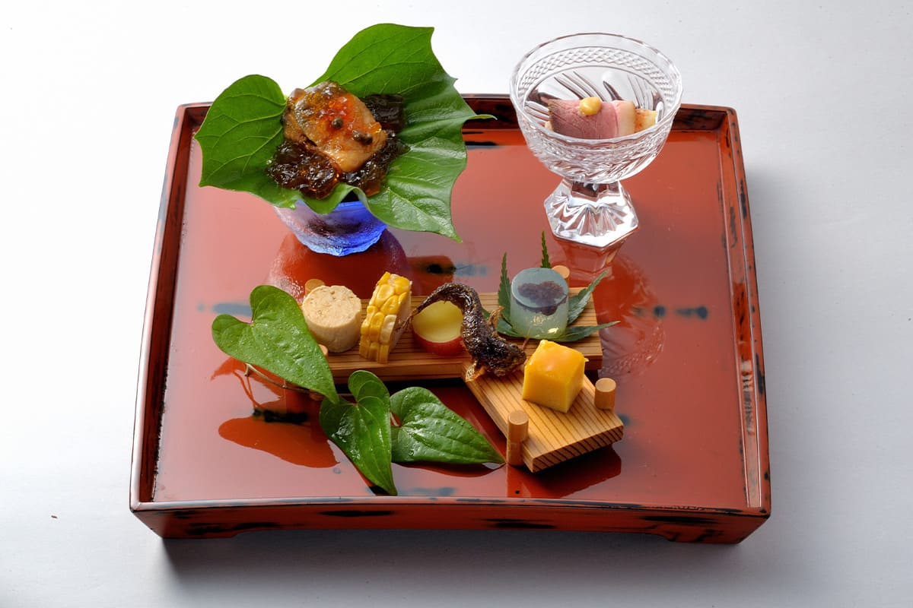
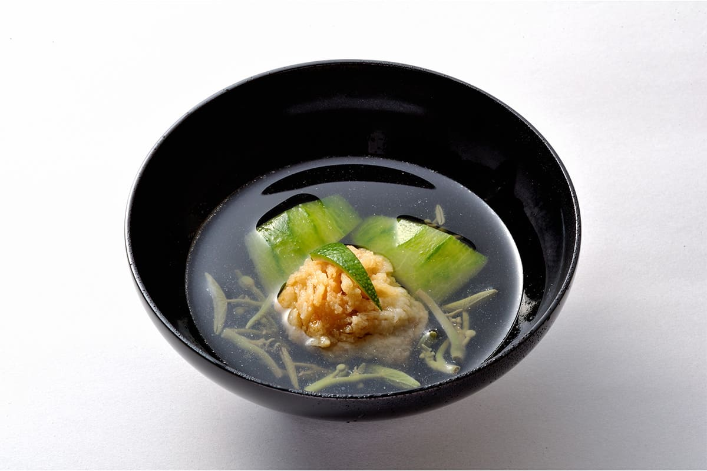
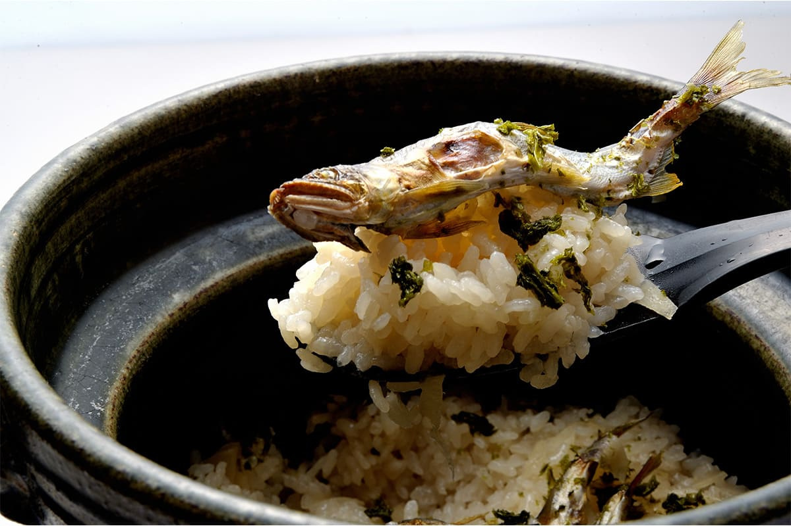
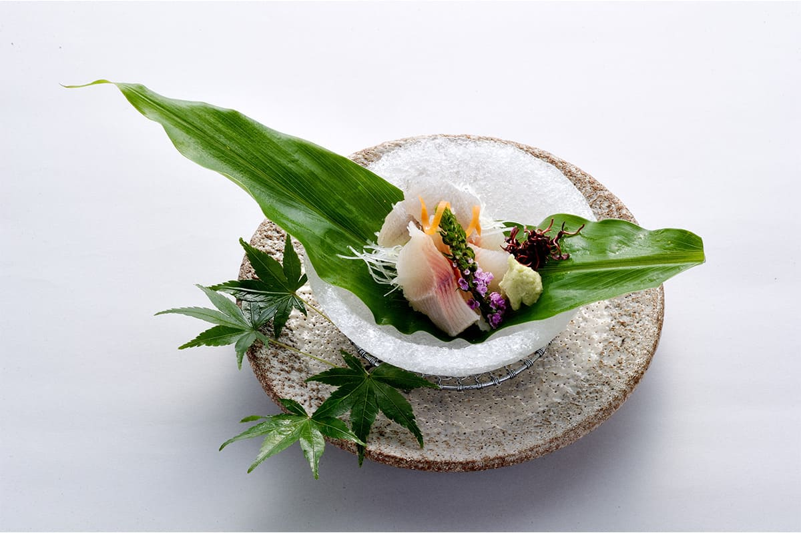

Префектура Исикава · Хакусан · еда и ночлег
Wataya: осенняя аю на очаге у подножия Хакусана

Выбирать гостиницу ради сезонного вкуса это удовольствие взрослого путешественника. Ради аю, речной рыбы, которую японцы ждут каждое лето и осень, мы поехали в Хакусан, в рёкан-ресторан Wataya у ворот главного святилища горы Хакусан.
Сезон
Рыба, которая живёт один год
Когда в Японии говорят о сезонной рыбе, обычно имеют в виду море: зимнюю фугу и крабов, первого весеннего тунца кацуо, «вишнёвого» морского леща. У многих из них есть поэтические имена, которые попали даже в словари сезонных слов для хайку. Япония окружена морем и тянется с севера на юг, поэтому каждое время года приносит свой улов.
Но и у речной рыбы есть сезоны, и вкус её меняется вместе с ними. Лучший пример: аю, главная речная рыба Японии. Морских рыб, которые меняют название по мере роста, японцы знают несколько, а среди речных такая, пожалуй, одна.
Ранней весной, когда вода теплеет, появляются мальки, «тиаю». К началу лета подросшую рыбу зовут «вакааю», молодой аю. Потом наступает пора взрослой летней рыбы, а с конца лета до осени аю становится «оти-аю», рыбой, которая скатывается вниз по течению. У части осенних рыб есть икра, и вместе с особой плотностью мяса это делает «оти-аю» лакомством, от которого любители аю не могут отказаться.
Вся жизнь аю укладывается в один год и проходит те же этапы, что и человеческая. Поэтому её называют ещё «нэнгё», рыбой одного года. У мальков, молодой рыбы и осенней аю разный вкус, и отдельное удовольствие в том, чтобы сравнивать их.
Река
Острая морда как знак хорошей рыбы
Вкус аю зависит и от реки, в которой она жила. Аю питается водорослями, которые нарастают на камнях речного дна, и от качества этих водорослей зависит качество рыбы. Где растут водоросли лучше, в прозрачной воде или в мутной, понятно без объяснений. А прозрачные реки текут в горах.
Если уходить от моря всё дальше в горы, река становится уже, течение быстрее, и в воде появляются крупные угловатые камни. Там наверняка плавают аю с заострённой мордой.

Водоросли прочно держатся на камнях, а у аю нет ни рук, ни ног: соскребать их приходится одним ртом. Чтобы доставать водоросли из щелей между камнями, морда у рыбы сама собой вытягивается. Острое выражение и заострённый рот говорят, что аю ела хорошие водоросли. И такая рыба, конечно, вкусная.
Готовят аю по-разному, но большинство поваров первым назовут сиояки: живую рыбу насаживают на шпажку, посыпают солью и жарят на углях. Вот и всё. Это тот самый случай, когда простое лучше всего, но именно потому, что рецепт прост, всё решают выбор рыбы и мастерство повара.
Рёкан
Дом у ворот святилища

Больше двадцати лет назад мы услышали о гостинице, где повар жарит аю на очаге прямо в номере. Мы тут же поехали туда, и вкус той рыбы запомнился навсегда.
Гостиница называется Wataya и находится рядом с Цуруги, городком в Хокурику, известным своим сакэ. Дом стоит у входа в святилище Сираяма-химэ, головное святилище всех японских святилищ Хакусан, так близко, что из номеров второго этажа видны его ворота-тории. Место торжественное, но кормить здесь вкусно никто не стесняется.
Спустя много лет мы снова здесь, у очага, где ждёт аю. Спускаемся по каменной лестнице, которая ведёт от святилища, и проходим под занавеской норэн, которая хлопает на осеннем ветру. Никакой пышности: ключ выдают за маленькой стойкой у входа.
Старый двухэтажный деревянный дом за эти годы почти не изменился, и это радует. Коридор так же скрипит под ногами, как двадцать лет назад. Нам здесь всё знакомо и при этом ново, но и тот, кто приходит впервые, почувствует то же самое. Время только добавляет этому дому благородной патины, как старому серебру.
Горячего источника здесь нет, но в ванну щедро добавляют лекарственные травы, и она медленно прогревает тело перед ужином. В номере чувствуются основательность и покой. В нужный момент в очаге разводят огонь и начинают готовить аю. Зимой огонь в радость, в конце лета от него хочется отодвинуться, но ради хорошей аю жар можно и потерпеть.

Ужин
Есть значит принимать чужую жизнь
Повар держит над огнём живых аю на железных шпажках. Рыба изгибается от жара, будто морщится. Повар то и дело поворачивает шпажки и следит за огнём. В какой-то момент рыба словно смиряется и перестаёт биться, и именно тогда её снимают со шпажки и кладут перед гостем.
Есть значит принимать чужую жизнь. Помнишь об этом, и всё равно вкусное остаётся вкусным. Рыба горячая, рассыпчатая. Про аю часто говорят, что она пахнет огурцом, но во рту запах скорее напоминает нагретую летнюю траву: зелёный аромат идёт с языка в нос. Горьковатые внутренности понемногу становятся сладкими, и кажется, что рыба сама заявляет: вот он, вкус аю.

Рядом с гостиницей текут к морю река Тэдори и много других чистых рек, и на их каменистом дне наверняка растут вкусные водоросли. Аю для ужина ловят рыболовы на Тэдори и соседних реках. Перед тем как жарить, рыбу сутки держат в садке, чтобы она избавилась от песка, а жарит её сам шеф-повар, аккуратно и неторопливо, и мясо выходит сочным. Мы откусили рыбу с головы, и перед глазами встала вода у самого речного дна.

Чтобы продлить послевкусие, в доме есть подходящее место, спрятанное недалеко от общей бани. Можно листать книги из собрания рёкана или просто сидеть на веранде энгава и смотреть в сад. Чем глубже ночь, тем лучше в этом рёкане.
В 2020 году ночь с ужином и завтраком стоила 30 813, 34 608 или 40 933 иены, с налогом и обслуживанием.
Wataya
- Адрес
- префектура Исикава, Хакусан, Санномия-мати, И-55-2
- Телефон
- +81 76-272-0570 (9:00–21:00)
- Номера
- 7; ужин и завтрак, японская кухня, в отдельной комнате
- Цены / Вход
- ночь с ужином и завтраком 30 813, 34 608 или 40 933 иены с налогом и обслуживанием
- Заезд / выезд
- 15:00 / 10:00
- Как добраться
- от Канадзавы по железной дороге Хокурику до станции Цуруги (около 30 минут, пересадка на станции Ниси-Канадзава), оттуда около 5 минут на такси; около 25 минут на машине от развязки Хакусан; около 30 минут на машине от аэропорта Комацу
Фото: Ко Мияди.